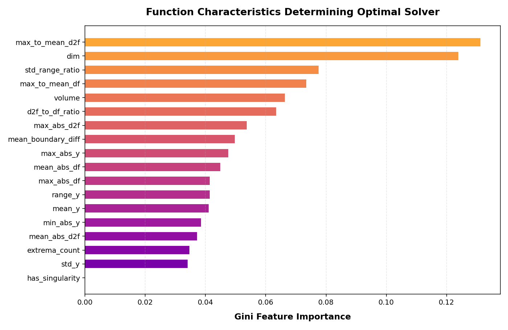

Solver Selection via Machine Learning
This project uses machine learning (Random Forests) to analyze function attributes and automatically select the optimal numerical integration algorithm. It avoids the computational overhead of trying multiple solvers or risking failure due to hidden singularities, step functions, or high dimensional scaling.
Decision Tree
BaselineSimple flow chart with maximum depth of 4. Highly interpretable but lacks ensemble generalization.
Random Forest
Best Model100 Trees ensemble model. Achieves a 2.2x improvement over the 25% random guessing baseline.
Empirical Results & Visualizations

The 18 Mathematical Features
To classify equations without inspecting their formulas, we probe each function numerically at 500 points in the hyperrectangular domain $[a, b]^d$. Here is the glossary of features our model uses:
dim
Basic StructureThe dimension ($d$) of the integration domain, ranging from 1 to 5. Primary indicator of grid method scaling limitations.
volume
Basic StructureThe total hyper-volume of the domain, computed as the product of boundary widths $\prod_{j=1}^d (b_j - a_j)$.
mean_y
Function StatisticsThe average value of the function evaluations across the sampled points in the domain.
std_y
Function StatisticsThe standard deviation of function values. Measures the overall fluctuation of the function.
range_y
Function StatisticsThe span between the maximum and minimum values of the function: $y_{max} - y_{min}$.
std_range_ratio
Function StatisticsThe ratio of standard deviation to range. Highlights ruggedness: high values indicate persistent fluctuations rather than flat regions with minor bumps.
min_abs_y / max_abs_y
Function StatisticsThe minimum and maximum absolute values of the function. Useful for identifying scaling behaviors.
mean_abs_df
Smoothness (First Derivative)The average magnitude of the first derivative estimated along coordinate axes using central differences.
max_abs_df
Smoothness (First Derivative)The maximum absolute first derivative. Detects steep slopes or edges.
mean_abs_d2f
Smoothness (Second Derivative)The average magnitude of the second derivative. Measures curvature and local oscillations.
max_abs_d2f
Smoothness (Second Derivative)The maximum absolute second derivative. Captures localized severe changes in curvature.
d2f_to_df_ratio
Smoothness (Derivatives)The ratio of second derivative mean magnitude to first derivative mean magnitude. Indicates curvature severity relative to slope.
max_to_mean_df
Smoothness (Derivatives)Ratio of maximum slope to average slope. Large ratios indicate sudden, steep steps or kinks in an otherwise flatter function.
max_to_mean_d2f
Smoothness (Derivatives)Ratio of maximum curvature to average curvature. **Most important feature (13.1%)** for detecting local kinks that break high-order integration methods like Romberg.
extrema_count
OscillationsThe number of local extrema (valleys and peaks) detected along a 1D diagonal slice. Counts sign changes in the first derivative.
mean_boundary_diff
PeriodicityThe average difference between function values at the lower and upper bounds. Helpful for finding periodic behaviors.
has_singularity
SingularitiesA binary flag set to 1 if evaluated values exceed $10^4$ or derivatives exceed $10^6$, indicating potential divisions by zero.
Extracted Decision Tree Regimes
Here is the decision hierarchy learned by the model to determine the best integration method. This structure shows the exact rules split at each node:
Function Simulation Sandbox
Design a custom function in real time. We will generate the function, numerically extract its 18 features in JavaScript (using 500 samples), feed them to the model's Decision Tree rules, and display which solver is recommended!